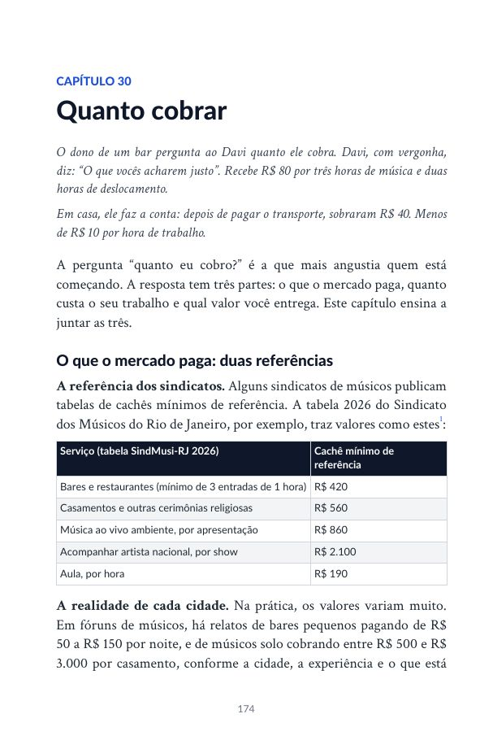
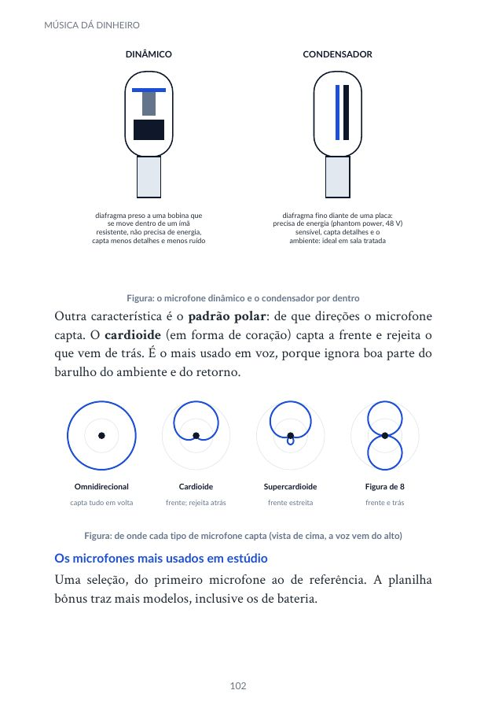
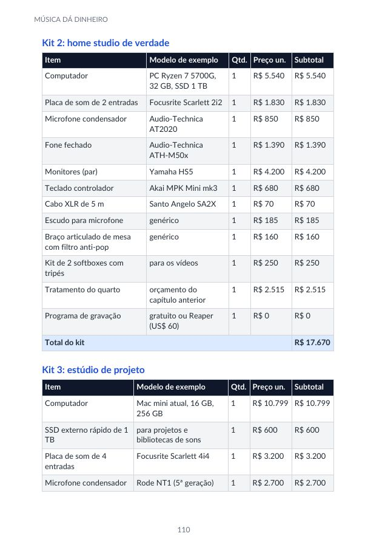
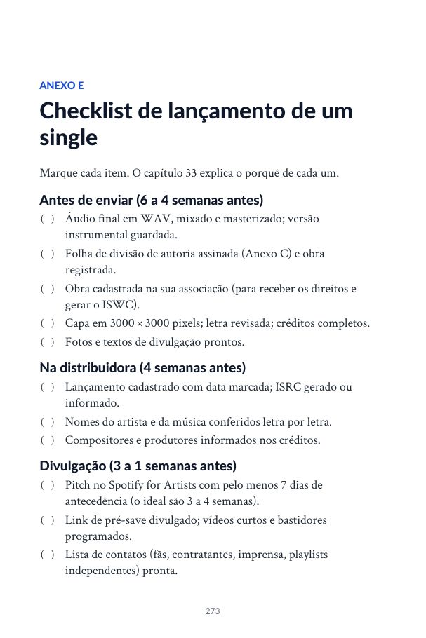

Modelos de contrato
Proposta de show, contrato de apresentação, autorização de uso, split sheet e contrato com empresário. Basta preencher.
Livro digital · Josimarth Dias
O que ninguém te conta sobre viver de música no Brasil, com os números reais.
Quanto custa montar um show, gravar uma música, fazer um clipe, quanto cobrar, como lançar nas plataformas, como não cair em golpe e como transformar talento em profissão.
Você toca bem. Já cantou em barzinho, em igreja, em festa de amigo. Alguém sempre diz: “você devia viver disso”. Mas ninguém explica como.
Quanto cobrar sem espantar o contratante? O que comprar primeiro, a caixa de som ou o microfone? Vale gravar em estúdio ou em casa? Por que a música tem 2 mil plays e rende centavos? O contrato que te mandaram é bom?
A maioria aprende isso errando, perdendo dinheiro e, às vezes, desistindo. Este livro junta o que normalmente leva anos para aprender em um só lugar, com valores em reais, leis brasileiras e exemplos de quem chegou lá e de quem não chegou.
Do quarto ao palco
O livro começa do zero: mostra o que fazer primeiro, onde não gastar à toa e como crescer um passo de cada vez, no seu ritmo.
E, no fim, um plano para os seus primeiros 90 dias.
O repertório
Mais 8 anexos: modelos de proposta, contrato e split sheet, checklist de lançamento, glossário, diário e índice de assuntos.
Por dentro
Tabelas, ilustrações que explicam o equipamento e checklists para marcar.




Para quem é
Junto com o livro
Proposta de show, contrato de apresentação, autorização de uso, split sheet e contrato com empresário. Basta preencher.
Coloque cachê, músicos, transporte e impostos, e a planilha calcula o preço mínimo. Inclui controle do mês e metas de 90 dias.
Instrumentos, cabos, microfones, caixas, placas, pedestais e acústica, item por item, com faixas de preço.
Plano de 90 dias, rotina semanal, registro de shows e lançamentos, checklist do show e autoavaliação.
Em separado, para você mandar a um amigo músico antes que ele assine algo errado.
Quem escreveu
Mais de 30 anos de música, voz e violão.
Cantor, compositor e violonista de Brasília, à frente do projeto A Mensagem. Escreveu o livro que gostaria de ter lido quando começou: com as respostas práticas que custaram tempo e dinheiro para descobrir, revisadas com dados e leis atuais.
Preço de lançamento
de R$ 47 por
R$19,90
no Pix, no cartão ou no boleto · acesso imediato
Comprar agoraGarantia de 7 dias. Se não for para você, peça o reembolso dentro de 7 dias pela própria Kiwify e recebe 100% do valor de volta.
Perguntas frequentes
Logo após a confirmação do pagamento, a Kiwify envia o acesso para o seu e-mail. Você baixa o livro (em PDF e em EPUB) e os bônus na área do aluno.
Sim. Você recebe duas versões: o PDF, com a diagramação do livro, e o EPUB, em que a letra se ajusta ao tamanho da tela do celular, do Kindle ou do Apple Livros. As duas têm sumário clicável.
Pode. O capítulo “O mapa dos golpes” está liberado de graça: baixar o capítulo grátis.
Não. O livro explica cada termo técnico quando ele aparece e tem um glossário no final.
Sim. Há trechos específicos para músicos de igreja, bandas e DJs, além de quem segue carreira solo.
Os valores são de 2026 e servem como referência de ordem de grandeza. O livro ensina a fazer a conta, e a planilha bônus deixa você atualizar os números.
Não, e nenhum livro honesto garante. Ele mostra os caminhos, os custos, os riscos e os erros mais comuns, para que as suas decisões sejam melhores.
Você tem 7 dias de garantia. Peça o reembolso pela Kiwify e o valor volta integralmente.